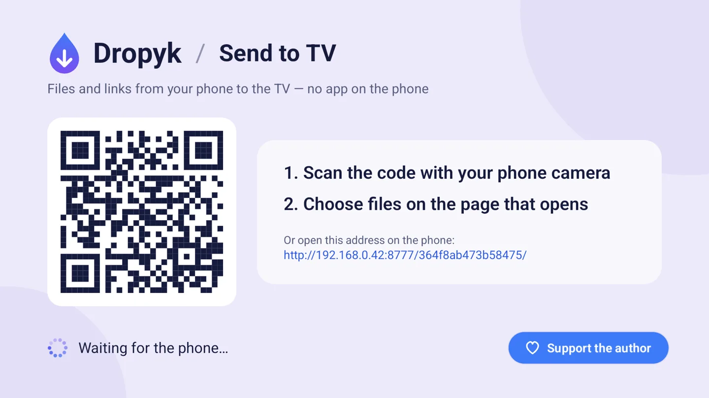
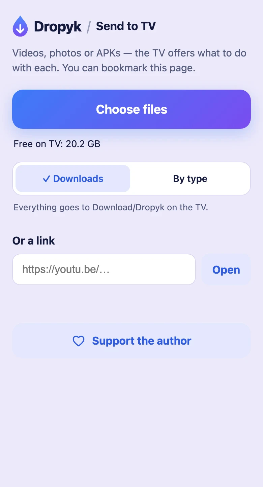
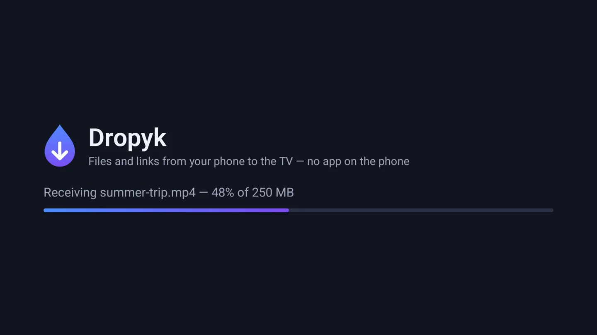
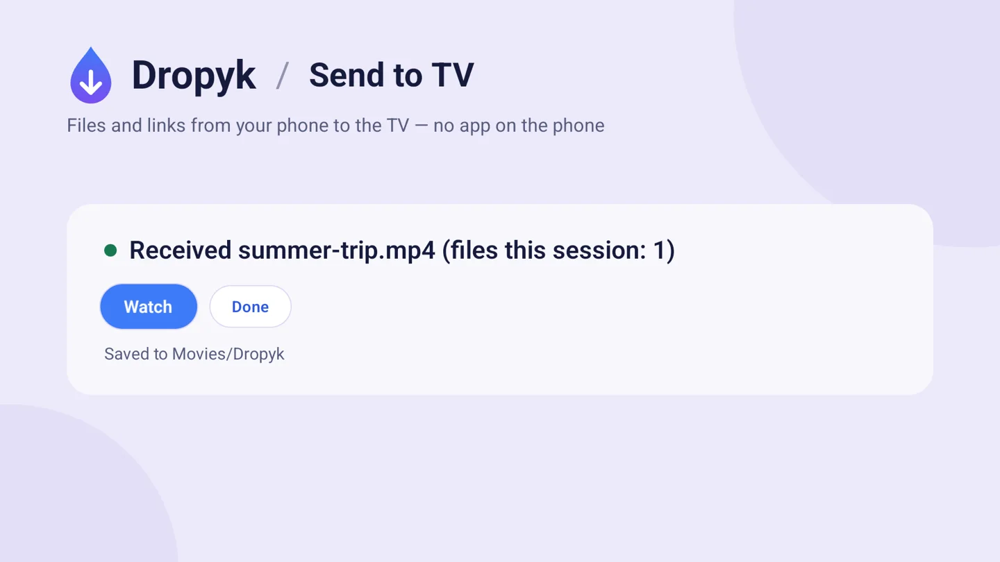
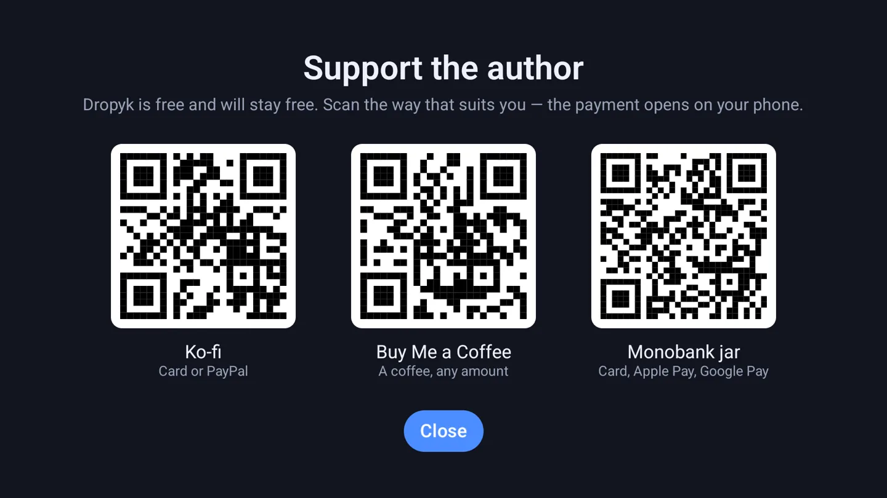

For Android TV and Google TV
From your phone to the TV — in one scan.
Photos, videos, files and links over your home network — by QR code from any phone, or with Quick Share from Android. No account and no app on the phone.


- No cloud
- No account
- Open source, GPL-3.0
How it works
-
Open
Start Dropyk on the TV. You'll see a QR code.
-
Scan
Point the phone's camera at the code. A page from the TV opens — bookmark it if you like.
-
Send
Choose files or paste a link — they appear on the TV right away.
What it does

Big files, straight to disk
Pick one file or a hundred; they go one by one. A 4 GB film never passes through the TV's memory, and the page checks free space first.

One press with the remote
The TV offers what to do: a video plays, an APK installs, a photo shows on screen, a link opens.
Quick Share from Android
With Dropyk open, the TV shows up in the Share sheet of Android phones on the same Wi‑Fi, under its own name. Pick it, check the PIN, accept on the TV — encrypted end to end, like between two phones.
Download/Dropyk.Movies/Dropyk, photos in Pictures/Dropyk, music in Music/Dropyk, the rest in Download/Dropyk.You choose where files go
Switch it on the phone page; the phone remembers. Sorted by type, players and galleries find files where they look first.
Also
From iPhone, iPad and Mac
Add the shortcut, type the TV's address once — it's under the QR code — and Dropyk appears in the Share sheet for photos, videos and files.
Add the shortcutReceive in background
A switch on the TV keeps Dropyk receiving while it's closed and after a reboot. When something arrives, Dropyk comes to the screen by itself.
Dropyk for Mac
The other way round: receive files from an Android phone on your Mac with the phone's own Quick Share. Lives in the menu bar, can accept automatically, and puts several files into one folder. A fork of NearDrop by Grishka. macOS 12+.
Install
- Download dropyk.apk.
- Copy it to the TV with the Downloader app, a USB stick, or
adb install dropyk.apk. - Allow and open. When the TV asks, allow installing from that source, then open Dropyk from the app list.
Android 7.0 or newer. On Android 10+ no storage permission is needed.
Privacy
- Files go from the phone to the TV over your own network. No server in between, nothing uploaded anywhere.
- The page address carries a secret key, so only someone who saw the code can send.
- Quick Share is encrypted end to end, and the TV asks before every transfer. It listens only while Dropyk is open. No account, no ads, no tracking.

Support the author
Dropyk is free and will stay free. The same links are on the TV's support screen as QR codes.